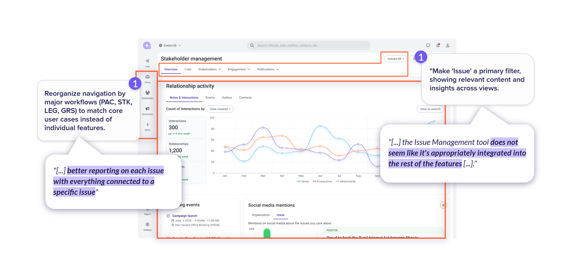

Overview
As Quorum, an enterprise platform for US government affairs, began exploring AI, our biggest challenge was clear: move past feature-driven thinking and harness AI in ways that genuinely empowered users.
My Role
When AI became a strategic focus at Quorum, I partnered with the PM and Designer from AI team for the beta launch of the AI chat feature. I led early research on prompts and UX. As scope expanded, I facilitated design discussions with the Product Director to reimagine interactions and define a long-term cross-product AI strategy.
Collective Learning
As Product Design Manager, it became clear that shifting the company mindset toward being AI-driven required me to keep our team in sync with fast-moving technology. Our design team stepped up, turning AI capabilities into tangible value across the organization.
I drove initiatives through benchmarking and hands-on experimentation with AI tools, guiding designers to explore how patterns like copilots and natural language interactions could redefine interfaces and internal processes.
Learning Approach
- Team Benchmarking: I led a collaborative research initiative on AI tools and trends, analyzing products like GitHub Copilot, Augment, and Lovable.
- Hands-on Experimentation: Team members directly experienced AI tools to understand capabilities, some of the team's initiatives later became wider initiatives across the company.
- Pattern Recognition: Identified common AI interaction patterns and their implications, analyzing use cases for these patterns and how they could be applied to our product.
Evaluating a beta AI product
As Quorum rolled out AI features, I analyzed prompts and adoption patterns to find where AI could truly ease workflows, not just add "intelligence." Combining survey insights with usage data, I turned early user signals into clear opportunities for improvement.

General paradigms to consider for AI design
- Redesigning features with AI raised critical questions about the paradigm shift and its impact on our solutions.
- Every new technology faces barriers to adoption, from personal preferences to broader issues of trust.
- Embedding small, contextual AI "pills" in the interface proved more valuable, and drove seamless adoption than forcing users into a chat experience.

"The AI review right at the top of the page is the most useful to me. I can get right to it and decide if I care or not"
Vision and Documentation
As our AI explorations deepened, the challenge wasn't just adding "intelligent" features, but rethinking UX patterns in an AI-augmented world. Since stakeholders lacked a clear vision of what an AI-powered interface could be, product and design partnered to create a forward-looking prototype and document key AI design patterns.
I gradually involved my team, turning it into a collective effort. The final prototype became a complete product overhaul, enriched by diverse perspectives and serving as a shared reference across product, engineering, and leadership.
AI that fits naturally into workflows
We pinpointed where AI could truly help, designing it to fit naturally into existing workflows, enhancing familiar processes without forcing users to change how they work.
Documentation deliverables
- Vision prototype: Interactive mockup showing AI-augmented workflows
- Design patterns: Documented common AI interaction patterns and best practices
- User journey maps: Visualized how AI could enhance specific user workflows


Impact & Results
Reflection
Thank you for reading. This project shifted Quorum's AI design from feature-driven to user-centered, with insights and patterns that still guide our strategy.
The key learning was that AI transformation isn't just about technology—it's about rethinking how users interact with products and ensuring AI enhances rather than complicates their workflows.